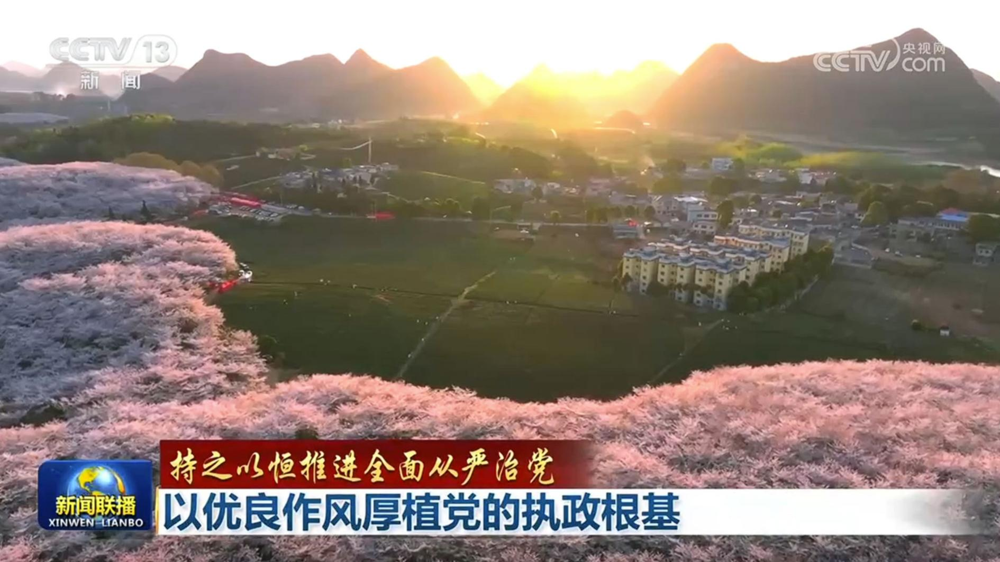
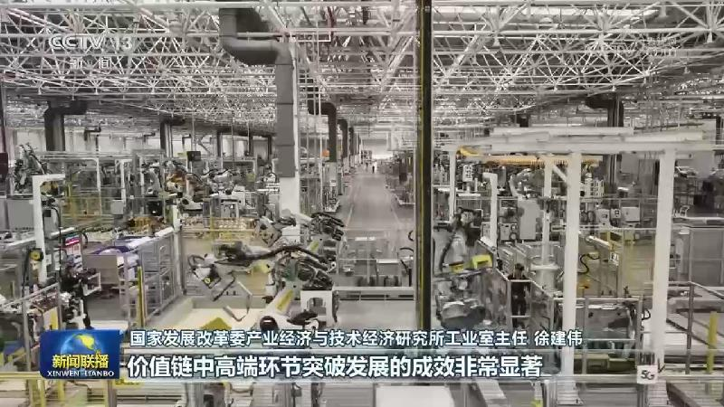
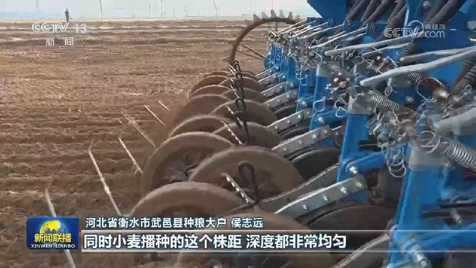
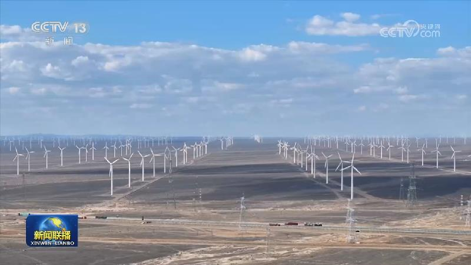
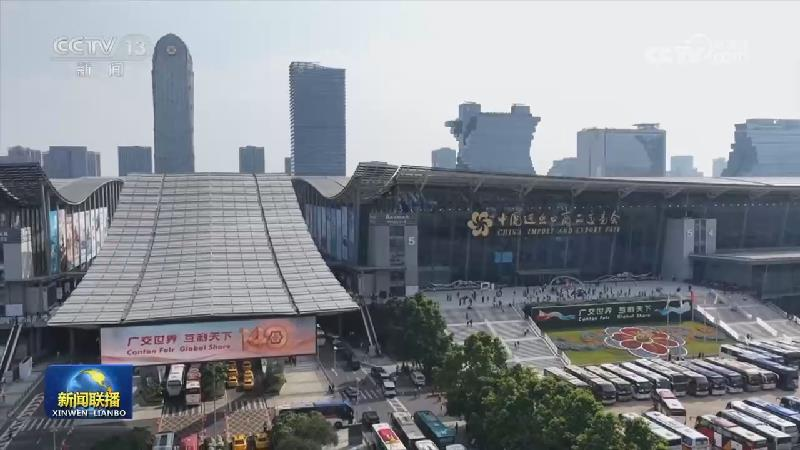
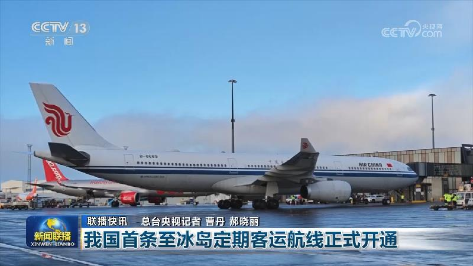
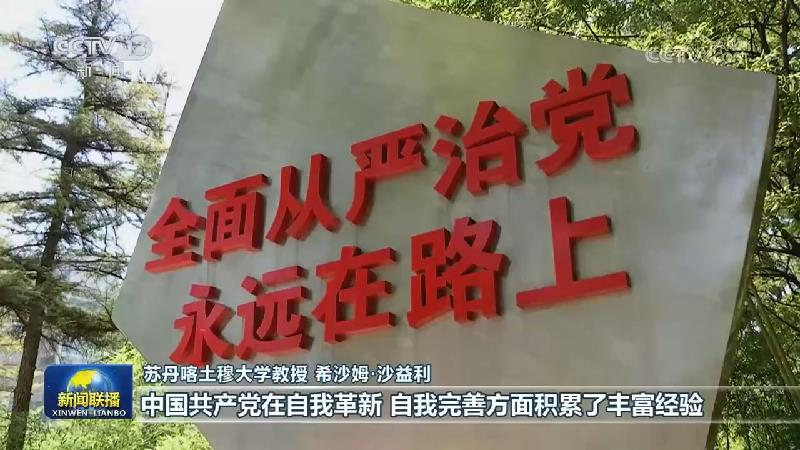
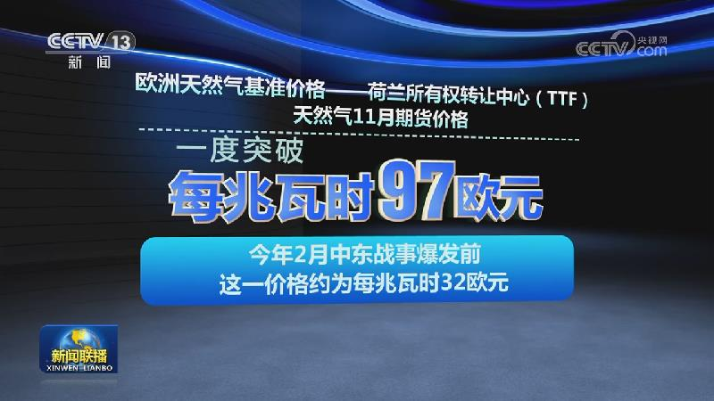

01
习近平致电祝贺卢拉当选连任巴西总统
10月27日，国家主席习近平致电卢拉，祝贺他当选连任巴西联邦共和国总统。习近平指出，卢拉总统为推动中巴关系发展作出重要贡献。近年来，我和卢拉总统通过不同方式保持密切沟通，共同引领携手构建更公正世界和更可持续星球的中巴命运共同体取得新进展，两国关系的全球性、战略性、长远性更加突出，成为全球南方国家团结合作的典范。……
10月27日，国家主席习近平致电卢拉，祝贺他当选连任巴西联邦共和国总统。习近平指出，卢拉总统为推动中巴关系发展作出重要贡献。近年来，我和卢拉总统通过不同方式保持密切沟通，共同引领携手构建更公正世界和更可持续星球的中巴命运共同体取得新进展，两国关系的全球性、战略性、长远性更加突出，成为全球南方国家团结合作的典范。……
10月27日，国家主席习近平向日本前首相福田康夫遗属致唁电，对福田康夫逝世表示哀悼，向其遗属表示慰问。

习近平总书记强调，党的作风就是党的形象，关系人心向背，关系党的生死存亡。党的十八大以来，以习近平同志为核心的党中央从制定实施中央八项规定开局破题，以钉钉子精神纠治“四风”，党风政风焕然一新，社风民风持续向好，清风正气激荡神州大地，凝聚起不断推进强国建设、民族复兴伟业的坚定信心和磅礴力量。

国家统计局今天（10月27日）发布的数据显示，今年前三季度，我国工业经济高质量发展稳步推进，规模以上工业企业利润实现较快增长。
各地加快建设重大水利工程，不断提升水资源优化配置能力，助力经济社会高质量发展。

眼下，各地加快秋季农业生产进度，有序推进秋粮收获和冬麦播种。南方水稻正陆续收获。在江苏，3300万亩水稻陆续成熟，当地农业部门组织调度履带式联合收割机8.1万台、烘干机3.4万台，全力投入抢收烘作业，确保水稻机收率稳定在99%以上。目前，江苏全省水稻收获进度近三成。……

国家能源局最新发布的数据显示，今年前三季度，风电光伏发电新增装机容量约1.7亿千瓦。截至9月底，全国风电光伏累计装机容量突破20亿千瓦，达到20.1亿千瓦。风光发电增量占全社会新增用电量的64%，新能源大规模替代传统化石能源的减碳效益持续释放。

第140届广交会第二期今天（10月27日）闭展，共有1.1万家企业参展。其中，专精特新、单项冠军等优质企业超3600家，同比增长约7.6%。围绕全球采购商差异化的采购需求，多元供采对接活动成为本届广交会配套服务的一大亮点。截至目前，本届广交会线下已累计举办近20场供采对接活动，线上组织22场选品活动，助力企业精准对接全球市场。
每天，我国有超1亿人次通过城市公交出行。今年以来，多地正通过按需服务、末端接驳等精细化改革，让公交出行更高效、更灵活。

前三季度西部陆海新通道沿线经通道进出口超7870亿元

国际人士持续关注中国共产党二十届五中全会，认为持之以恒推进全面从严治党，展现了中国共产党强大的组织力、执行力和生命力，不仅是中国取得巨大发展成就的关键保障，也为世界政党治理提供了重要借鉴。
26日，“为了人类的正义与和平”——纪念东京审判开庭80周年图片展在纽约联合国总部开幕。

俄乌在阿列什基实行人道主义停火